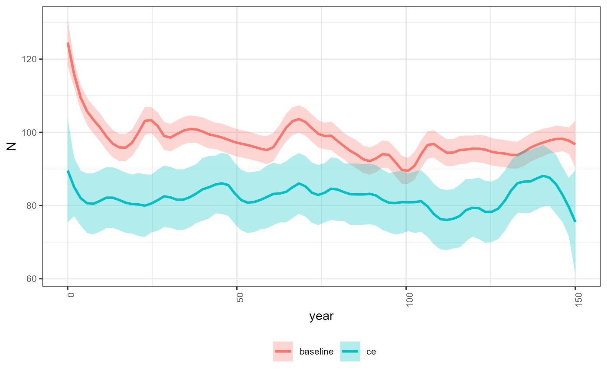

Population Model Batch Run
2022-09-26
population-model-batch-run.RmdOverview
Run the population model in batch mode. The population model in run separately for each spatial unit and each scenario. This helper function providers a wrapper to quickly explore alternative scenarios. Users may change the population vital rates, environmental parameters (stressors) or stressor-response curves between each batch model run.
Load Input Data
In this example we will load the stressor-response, stressor
magnitude file and life cycles file. The polygon geometry is not needed
to run the population model. Reset filename_ to point to a
local file on your computer.
library(JoeModelCE)
# Load the stress-response workbook
filename_sr <- system.file("extdata", "stressor_response_fixed_ARTR.xlsx", package = "JoeModelCE")
sr_wb_dat <- StressorResponseWorkbook(filename = filename_sr)
# Load the stress-magnitude workbook
filename_rm <- system.file("extdata", "stressor_magnitude_unc_ARTR.xlsx", package = "JoeModelCE")
dose <- StressorMagnitudeWorkbook(filename = filename_rm, scenario_worksheet = "natural_unc")
# Load the life cycle parameters
filename_lc <- system.file("extdata", "life_cycles.csv", package = "JoeModelCE")
life_cycle_params <- read.csv(filename_lc)Choose a Target Spatial Unit
The PopulationModel_Run run function runs the population
model for spatial units (e.g., watershed) individually. If users wish to
run the population model for all watersheds, they can simply wrap
PopulationModel_Run in a loop or apply function. Running
watersheds individually is advantageous because often certain parameters
need to be tweaked between the various watershed subunits.
# Choose target ID
# In this example just use the first watershed
HUC_ID <- dose$HUC_ID[1]Run the Population Model
Next, we can run the population model for a number of years
n_years and batch replicates MC_sims.
dose is the stressor-magnitude data object,
sr_wb_dat is the stressor response workbook data object,
life_cycle_params is the life cycle parameters file for the
target species. stressors is an optional argument to
specify whether the model should be run with only a subset of the
stressors (e.g., ‘temperature’, ‘sediment’, if left as NA
the model will run with all stressors in the stressor magnitude
file).
The output data object from PopulationModel_Run will
consist of either a list or dataframe object. If the
output_type argument is set to “full” then a list object
will be returned containing the abundance time series matrices for each
batch replicate and each list stage with and without stressor variables.
However, the “full” output data object can be cumbersome to work with.
For convenience, the output_type argument can be set to
“adults” to return a simple dataframe object showing the abundance of
adults across years and batch replicates.
The model is always run with and without cumulative effect stressors
- since comparisons should always be made relative to a baseline or
status quo. The group variable in the output dataframe
specifies whether the model run includes stressor cumulative effect
variables “ce” or baseline reference conditions “baseline”.
data <- PopulationModel_Run(
dose = dose,
sr_wb_dat = sr_wb_dat,
life_cycle_params = life_cycle_params,
HUC_ID = HUC_ID,
n_years = 150,
MC_sims = 5,
stressors = NA,
output_type = "adults"
)
#> At least one NA in stressor values array
# Review output
head(data, 3)
#> year N MC_sim group
#> 1 0 96.86269 1 ce
#> 2 1 94.09490 1 ce
#> 3 2 90.44657 1 ce
# Look the median adult abundance
# with stressor variables (cumulative effects)
median(data$N[which(data$group == "ce")], na.rm = TRUE)
#> [1] 98.9695
# and without stressor variables (baseline status quo)
median(data$N[which(data$group == "baseline")], na.rm = TRUE)
#> [1] 97.31285Visualize the Time Series Projections
Simple plots can be included to visualize trends
library(ggplot2)
ggplot(data, aes(x = year, y = N, color = group)) +
stat_smooth(method="loess", span=0.1, se=TRUE, aes(fill = group), alpha=0.3) +
theme_bw() +
theme(
legend.position = "bottom",
legend.title = element_blank(),
legend.text = element_text(size = 8),
legend.key = element_blank(),
axis.text.x = element_text(angle = 90, hjust = 1, size = 8),
axis.text.y = element_text(size = 8),
#axis.title.x = element_blank(),
#axis.title.y = element_blank(),
strip.text = element_text(size = 8))
#> `geom_smooth()` using formula 'y ~ x'